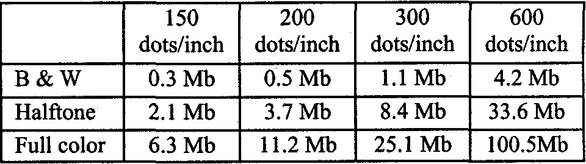

CuneiForm 98 NeST
Program function
The program CuneiForm 98 NeST is
designed to solve two main tasks: providing
the use of local network scanner(s) from any
workplace, and widening the possibilities of
batch input of multipage documents from the
paper carrier.
The first one of these tasks - network
scanning - is rather obvious. Many users have
been expressing their desire to use the scanner
like any other network resource. If one can
access a drive or a printer on the server or a
network, then why cannot one access a
scanner, physically connected to another
machine? Unfortunately, the operational
system designers and scanner manufacturers
offer very little to solve this problem (only
Hewlett Packard released a rather expensive
model Network ScanJet 5, which connects
directly to the network). The disadvantages of
such a restriction are the following: you either
have to buy additional scanners, or hook up the
scanner to different machines when it is
needed, or interrupt a person from work, whose
machine has a scanner hooked up to it. With
the help of NeST all becomes much easier-
you can use almost any office scanner as a
network shared device.
The second task - batch scanning - is
connected to the the transfer of paper
documents into the electronic system. If the
input of a separate page does not present any
difficulties, then, as the requirements increase,
the input of double-sided multipage
documents, two-page spreads ofbound or
unstitched books becomes a rather tiring job.
back sides of pages, place the left/right sides of
the two-page spreads in order, according to the
bound/unstitched source. Mode of batch
scanning allows to input batches, comprised
from several documents, which are separated
from each other with special marking (black)
sheets of paper. This will save the users much
time and effort, decrease the number of errors,
and increase the job effectiveness.
System requirements
The NeST program can be executed in
the operation systems MS Windows 95 and
higher, MS Windows NT 4.0 and higher, on a
separate machine, on the workstation or a
selected server on a local network, that have a
configuration not lower than 486 and 8 MB of
RAM. However, it is known that in such a
minimal configuration even the system itself is
working very slowly, so it is recommended for
the Windows 95/98 that the machine is not
weaker than Pentium with 16 MB of RAM,
and for a Windows NT 4/5 machine — Pentium
with 32 MB of RAM.
For program installation you need 5
MB of disk space, for the image transfer from
the scanning server to the client, each of these
machines should have no less free memory
(both RAM and disk space), than the size of
the scanned object, according to the following
table:
A specific NeST item - master of
document assembly - allows to normalize a
cluster of image files, batch scan front and
For network scanning you need an
setup and configured network with 1) NetBEUI
protocol; 2) Client for the Microsoft network;
3) Access to Microsoft network files. See
description of the Microsoft network setup in
the manuals of the corresponding operation
systems. Hardware network realization and its
bandwidth do not have an important value for
the program work.
